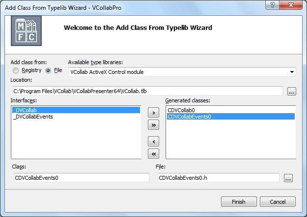

MS Office Automation Using VCollab Presenter
Users can create and run VBA scripts in MS office products to make one program to command another program to do something. This is MS office automation. VCollab Presenter provides a VCollab Type library that can be used in these VBA scripts for automation.
In this module we will show how Cax2Doc and Cax2PPT applications can be created using MS office automation.
Prerequisites: Visual Basic/ Visual C++ / COM / C# programming knowledge.
For Microsoft Office Automation basics read,
Automating Microsoft Office 97 and Microsoft Office 2000
Microsoft Office Development with Visual Studio.
Download the Type Library for VCollab Presenter VCollab.tlb.
Case Study 1: Cax2Doc Application Creation
Requirements: VC++ 2005, MS Word 2003, VCollab Presenter
- Open VC++ 2005 IDE.
- Create a new MFC Application, using File->New->Project menu.
- Click Project->Add Class in VC++ 2005 IDE.
- Select MFC Class From TypeLib and click the Add button.

5. Select MS-Word 11 libraries and click the ‘>>’ button before Finish.

- This will add all required MS-Word wrapper classes into your project.
7. Repeat steps 3 and 4 to add class for VCollab Presenter. (Ensure VCollab.tlb is present in your system else download it)
8.Select File option and locate the VCollab.tlb file from your local disk. Use >> and click Finish when the classes have been added. This will add all required VCollab Presenter wrapper classes into your project.

9. Include the required headers into your .cpp file and use the following function to generate a .doc file that is embedded with CAX.
#include “MSword.h” #include “vcollab.h” void CreateDoc(CString sCaxFilePath,CString sDocFilePath) { COleVariant vOpt(DISP_E_PARAMNOTFOUND, VT_ERROR); _Application oApplication; // Create IDispatch connection to MS-Word. oApplication.CreateDispatch(_T(“Word.Application”)); long iWndState=oApplication.GetWindowState(); oApplication.SetWindowState((long) 2);//minimize
{ // Display a message indicating that PowerPoint is not running. AfxMessageBox(_T(“MS-Word 2003 with SP3 (11.8313.8221) and above needed.”)); return; } Documents oDocuments; // Attach the presentations collection to the PresCollection variable. oDocuments.AttachDispatch(oApplication.GetDocuments()); // Create a new document. oDocuments.Add(vOpt,vOpt,vOpt,vOpt); _Document oDocument=oApplication.GetActiveDocument(); Selection oSel = oApplication.GetSelection(); InlineShapes oShapes=oSel.GetInlineShapes(); try { //Add Vcollab Presenter ActtiveX control to the document InlineShape vcollabShape = oShapes.AddOLEControl( COleVariant(_T(“VCOLLAB.VCollabCtrl.1”)) ,vOpt); //Set Width and height of the Active X Control vcollabShape.SetWidth(450);th(450); vcollabShape.SetHeight(300); //get ActiveX Object OLEFormat vcollabOle=vcollabShape.GetOLEFormat(); IDispatch* pDispObject= vcollabOle.GetObject(); if(pDispObject) { CVCollab vcollabObj=vcollabOle.GetObject(); //Set file path of the cax file that need to be linked with VCollab Presenter vcollabObj.SetFilePath(sCaxFilePath); } else { AfxMessageBox(_T(“VCollab Presenter is not installed properly”)); } } catch(…) { AfxMessageBox(_T(“VCollab Presenter is not installed properly”)); } //Save the document file.
vOpt,vOpt,vOpt,vOpt,vOpt, vOpt,vOpt,vOpt,vOpt,vOpt); oApplication.Quit(vOpt,vOpt,vOpt); // Free the dispatch. This sets m_lpDispatch to NULL. oApplication.ReleaseDispatch(); return ; } |
|---|
Case Study 2: Cax2PPT Application Creation.
Requirements: VC++ 2005, MS PowerPoint 2003, VCollab Presenter
- Open VC++ 2005 IDE.
- Create a new MFC Application using File->New->Project menu.
- Click Project->Add Class menu in VC++ 2005 IDE.
- In the following window select MFC Class From TypeLib and click the Add button.

5. Select MS-PowerPoint11 libraries like in the following window and click >> before Finish.

6. This will add all required MS-PowerPoint wrapper classes into your project.
7. Do step 3 and 4 to add again class for VCollab Presenter. (Before that copy the VCollab.tlb in case, it is not found in VCollab Presenter installed folder)
8. In the following dialog select File option and locate the VCollab.tlb file from your local disk and press >> before Finish. This will add all required VCollab Presenter wrapper classes into your project.

9. Include the required headers into your .cpp file and use the following function to generate a .doc file that is embedded with CAX.
#include “MSPPT.h” #include “VCollab.h” void CreatePPT(CString sCaxFilePath,CString sPPTPathName,CString sTemplatePath) { _Application oApplication; // Create IDispatch connection to PowerPoint. oApplication.CreateDispatch(_T(“PowerPoint.Application”)); // Bring the PowerPoint application to the front. oApplication.Activate(); long iPPtWndState=oApplication.GetWindowState(); oApplication.SetWindowState((long) 2);//minimize Presentations presentations; // Make sure there is a dispatch pointer for PowerPoint. if(oApplication.m_lpDispatch == NULL) { // Display a message indicating that PowerPoint is not running. AfxMessageBox(_T(“MS-PowerPoint 2003 and above needed.”)); return; } // Attach the presentations collection to the PresCollection variable. presentations.AttachDispatch(oApplication.GetPresentations()); // Connect to the active presentation. There is no error trapping. // If the active presentation the framework traps // the error and displays a message box. _Presentation ActivePresentation; if(sTemplatePath.GetLength()) { //Open Template ActivePresentation = presentations.Open( LPCTSTR(sTemplatePath), //File name (long)0, //Read-only (long)-1, //Untitled (long)-1 //WithWindow ); } else { // Create a new presentation. presentations.Add(1); ActivePresentation=oApplication.GetActivePresentation(); } // Connect to the slides collection. Slides oSlides(ActivePresentation.GetSlides()); const int ppLayoutTitleOnly = 11; // Add a new slide to the presentation. This code adds the new // slide to the end of the presentation. CRect ctrlRect; ctrlRect.top=0; ctrlRect.left=0; ctrlRect.right=600; ctrlRect.bottom=400; //set the Presenter control to the slide center _Master slideMaster=ActivePresentation.GetSlideMaster(); float slideWidth=slideMaster.GetWidth(); float fImageLeft=(slideWidth*0.5f)-(ctrlRect.right*0.5f); int iSlideCount=oSlides.GetCount(); oSlides.Add( iSlideCount+1, ppLayoutTitleOnly); //Connect to the first slide in the presentation. long lIndex = iSlideCount+1; COleVariant SlideNumber(lIndex); _Slide oSlide(oSlides.Item(SlideNumber)); // Connect to the Shapes collection. Shapes oShapes(oSlide.GetShapes()); float fImageTop=70; CString sWndText=sCaxFilePath; if(oShapes.GetHasTitle()) { Shape title(oShapes.GetTitle()); TextFrame textFrame =title.GetTextFrame(); TextRange textRange =textFrame.GetTextRange(); textRange.SetText(sWndText); fImageTop=title.GetTop()+title.GetHeight()+2; } else { Shape title(oShapes.AddTitle()); TextFrame textFrame =title.GetTextFrame(); TextRange textRange =textFrame.GetTextRange(); textRange.SetText(sWndText); fImageTop=title.GetTop()+title.GetHeight()+2; } try { Shape vcollabShape=oShapes.AddOLEObject(fImageLeft,fImageTop,ctrlRect.right,ctrlRect.bottom, _T(“VCOLLAB.VCollabCtrl.1”), _T(“”), 0, _T(“”), 0, _T(“”), 0); OLEFormat vcollabOle=vcollabShape.GetOLEFormat(); IDispatch* pDispObject= vcollabOle.GetObject(); if(pDispObject) { CVCollab vcollabObj=vcollabOle.GetObject(); //Set the cax file that to be linked with presenter in PPT vcollabObj.SetFilePath(sCaxFilePath); } else { AfxMessageBox(_T(“VCollab Presenter or above is not installed properly”)); } } catch(…) { AfxMessageBox(_T(“VCollab Presenter or above is not installed properly”)); } //vcollabObj ActivePresentation.SaveAs(sPPTPathName,1,1); oApplication.SetWindowState(iPPtWndState); // Quit PowerPoint. Note, the Quit command exits // PowerPoint without displaying any dialog boxes. So, // any unsaved data is lost. oApplication.Quit(); // Free the dispatch. This sets m_lpDispatch to NULL. oApplication.ReleaseDispatch(); return ; } |
|---|
The above method is just a sample code and only to show how VCollab Presenter can be used in Office Automation.
To create customized MS word documents on Powerpoint files you need to do more programming. Refer to the following links to understand what else can be done.